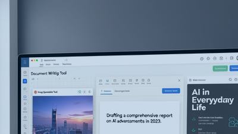

ElevenLabs vs Murf (2026): Pricing, Rights and Which to Pick

Short answer: choose ElevenLabs if natural voice quality is the priority; choose Murf if you want a longer recurring window and a broader voiceover workspace. Both accept publishers outside the US, subject to their terms.
Quick comparison
| ElevenLabs | Murf | |
|---|---|---|
| Best for | Natural narration, audiobooks | Voiceover for video and e-learning |
| Affiliate commission | 22% for 12 months (11% Business) | 20% recurring up to 24 months |
| Cookie | Not published | 90 days |
| Network | PartnerStack | PartnerStack |
| Notes | Commissions payable about 90 days after paid signup; no paid ads to the site | Program page says anyone can join |
What to check before publishing
- Commercial rights: confirm which plan covers the use you need.
- Payout minimum and hold: a 90-day hold plus a minimum balance can delay the first payment.
- Tax forms: non-US publishers may need a W-8BEN for direct deposit.
- Terms change: re-check the official affiliate page before quoting a rate.
Who should skip both
If you only need occasional text-to-speech, the free tiers of general-purpose tools may be enough. Paying for a subscription only makes sense when the output is part of a repeatable workflow.